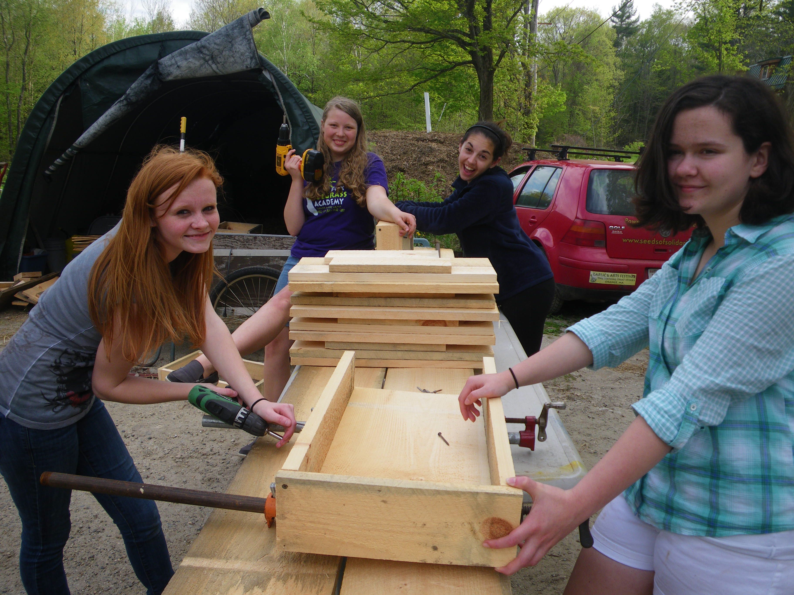

Craft Your Own Life
Young people ages 20-25 are encouraged to apply for Craft Your Own Life, a day long retreat on the following days: July 1st, August 31st, September 16th, and October 7th. Join us for a day-long retreat in a peaceful setting with tips to grow your own food, self-care, and conversation to envision a bountiful life forward. It’s free but spaces are limited so apply now.
We celebrated 20 years of SOL (Seeds of Leadership) Garden in 2018, our longest running program, and an amazing, life-changing experience for youth and staff alike! We have transitioned this to our Craft Your Own Life Program, and hope others will learn from our resources and curricula below.
Enjoy a new, youth made video that shows a day in the life of our SOL Garden program!

Inspire your own program and teaching! We are happy to share our curriculum, ‘Food for the SOL: Youth, Food, Justice and Community Building” Enjoy the SOL Garden Blues we wrote with musician Katie Sachs, then performed at the North Quabbin Garlic and Arts Festival.
Since the program's inception in 1998, 400 SOL Garden participants, most low-income and underemployed, have gained valuable life, college and career skills as they have: Cultivated a quarter acre garden and donated thousands of pounds of vegetables to families and senior citizens in our low-income community; Constructed their own 40′ solar greenhouse and designed and built the “SOL Shack” meeting space; Helped planted and tend gardens throughout the community at a shelter for homeless families, elementary schools, a hospital and health center, a library and for local families; Created and sold hundreds of ceramic SOL Bowls ; Given over 30 presentations at conferences and events; participated in Earth and Spirit youth retreats and outdoor adventure, workshops in nutrition, cooking, and healing arts, celebration art, and helped thousands learn, celebrate, and play at the North Quabbin Garlic and Arts Festival.

Inspire your own program and teaching! We are happy to share our curriculum, ‘Food for the SOL: Youth, Food, Justice and Community Building.”
Enjoy the SOL Garden Blues we wrote with musician Katie Sachs, then performed at the North Quabbin Garlic and Arts Festival.
What do participants say about their time with us?
I got a lot more confident in my ability to say and do things…to get a job done, roll up my sleeves and do it…SOL Garden is unbelievable and tremendously important. It pretty much carved out the life I have right now… There were people at SOL Garden who actually cared about what I had to say. Shawn.
Coming here is the best decision I ever made. Jen
SOL Garden is free to local youth, and made possible through grants from the MA Cultural Council Youth Reach Program, The AT and T Aspire Program, The Green Leaf Foundation, and individual contributions.